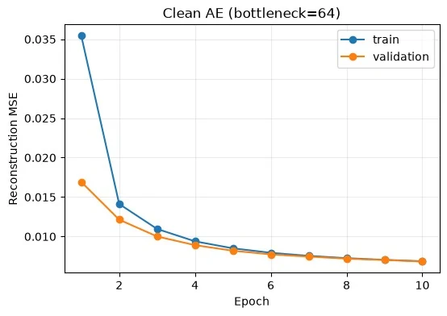
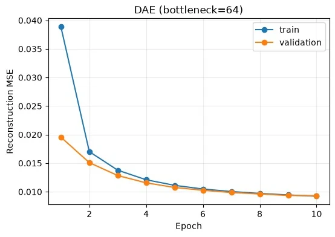
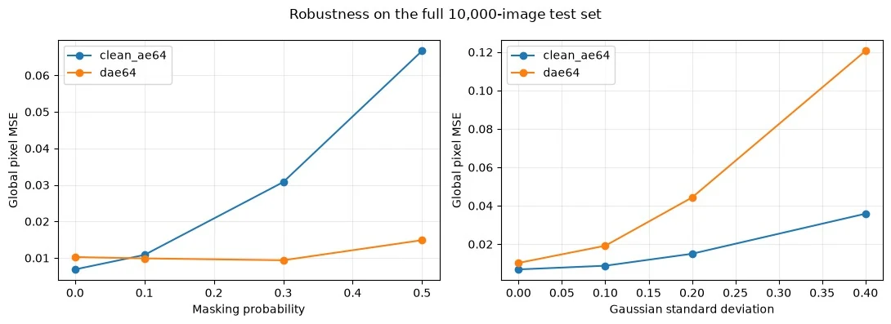
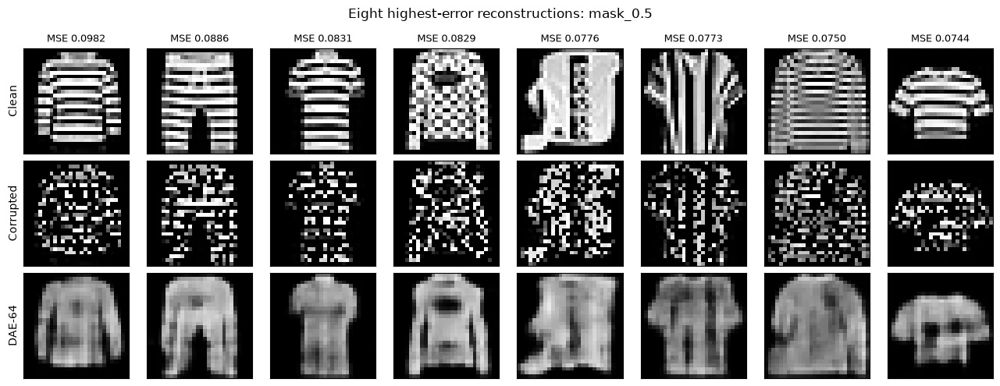
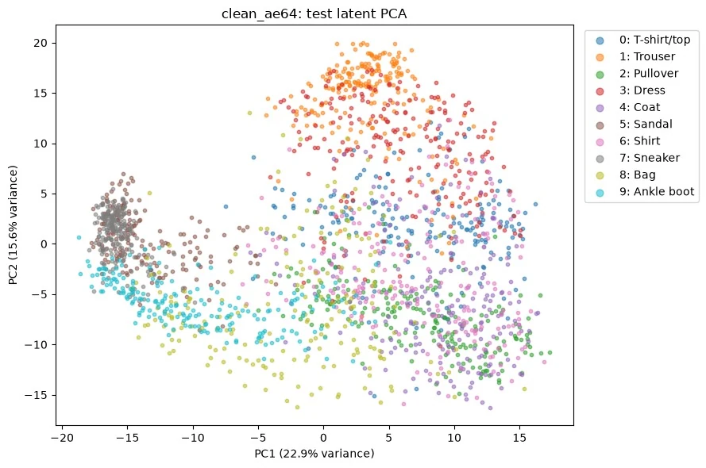
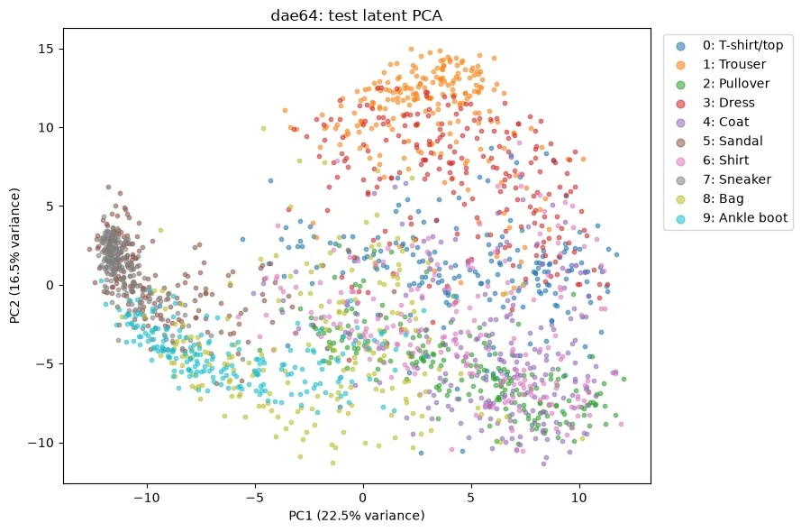
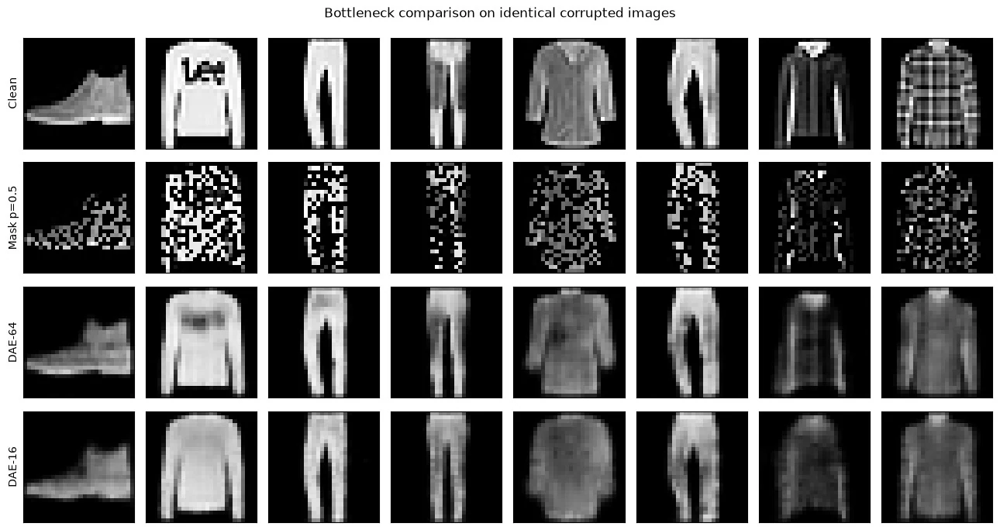

噪声下的重建与表征Learning what survives noise.
从 NumPy 梯度检查到 PyTorch 去噪自编码器，比较重建、噪声泛化与压缩表征之间的取舍。

01重建、抗噪和表征，是三个不同的问题
CEG5304 课程实验以 Fashion-MNIST 为对象，比较普通自编码器 AE 与去噪自编码器 DAE。实验不仅检查能不能重建输入，还追问：在遮挡和高斯噪声下是否稳健？压缩后的特征能否保留类别信息？重建误差下降是否意味着所有任务都改善？
使用固定划分与记录的随机种子组织实验；原始数据是服饰灰度图像。页面展示保存的课程实验输出，不把它扩展为医学影像或临床效果。
02先验证梯度，再训练卷积模型
实验从 NumPy 前向与反向传播开始。对参数进行微小正负扰动，用有限差分近似梯度，再与解析反向结果比较。这样可以在加入复杂模型前检查求导和数组维度问题。之后在 PyTorch 中实现卷积 AE／DAE，记录训练与验证曲线。
中心有限差分用于数值检查；它是验证方法，不代替正式训练中的反向传播。




03DAE 学习的是从扰动输入恢复干净目标
L = mean ‖x̂ − x‖²
DAE 的输入 x̃ 经过扰动，监督目标仍是干净图像 x；普通 AE 则以干净输入进行重建。
遮挡训练迫使模型利用剩余上下文恢复缺失区域，而不是简单复制像素。保存的可视化将干净输入、遮挡输入与重建结果放在对应位置，可以直接观察结构恢复和细节损失。
04对一种噪声更好，不代表对所有噪声更好
实验分别测试干净输入、50% 遮挡和高斯噪声 σ=0.4。下表为保存输出中的 MSE；数值越小表示该条件下的像素重建误差越低。不同测试任务的随机扰动应按各自设置理解，不把所有图都当成逐样本配对。
| 模型 | 干净 MSE | 50% 遮挡 MSE | 高斯 σ=0.4 MSE |
|---|---|---|---|
| AE · 64 维 | 0.006857 | 0.066671 | 0.035855 |
| DAE · 64 维 | 0.010237 | 0.014913 | 0.120920 |
| DAE · 16 维 | 0.014595 | 0.020095 | 0.132640 |


64 维 DAE 在遮挡任务上更好，但在该高斯噪声条件下反而弱于 AE。这说明训练扰动决定了模型学到的恢复偏好。不能从“做过遮挡去噪”直接推出对未知噪声的普遍鲁棒性。


05用冻结编码器检查信息保留
重建误差之外，实验冻结编码器并训练线性探针，检查表示是否保留可用于类别判断的信息；PCA 图仅用于观察低维投影的分布，不以视觉聚类代替分类测试。




| 模型 | 参数量 | 线性探针验证 / 测试准确率 |
|---|---|---|
| AE · 64 维 | 211,905 | 85.42% / 83.69% |
| DAE · 64 维 | 211,905 | 85.00% / 83.61% |
| DAE · 16 维 | 61,329 | 79.73% / 78.79% |


06哪些结论可以带走，哪些还需要验证
将 DAE 瓶颈从 64 维降为 16 维时，参数约减少 71.1%，线性探针测试准确率下降 4.82 个百分点。但该对照同时改变瓶颈维数和参数规模，因此不能把差异完全归因于维数本身。
重建更像、抗噪更强、表示更有用，需要分别测量。
这些是固定划分、单次已保存实验的结果，不是多随机种子的统计结论。后续可控制参数量、重复训练，并增加与目标任务匹配的噪声测试。我的工作集中在实现、梯度检查、训练评估与结果解释。